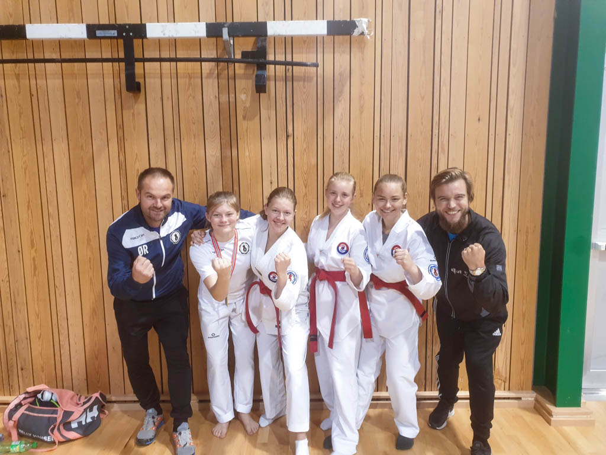
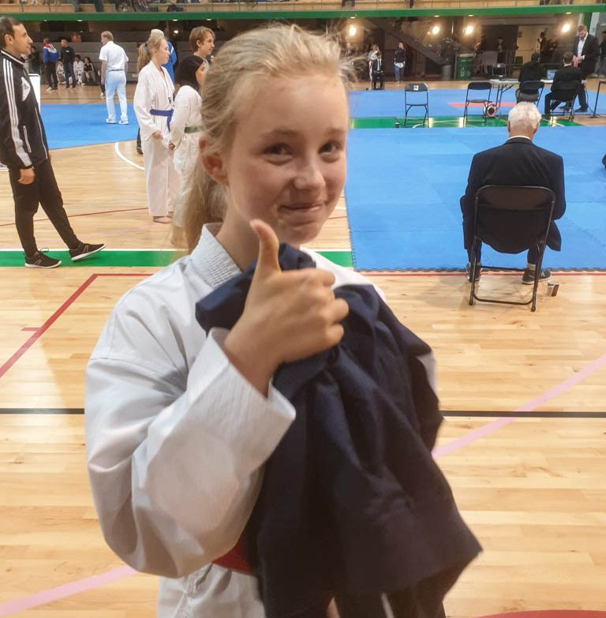
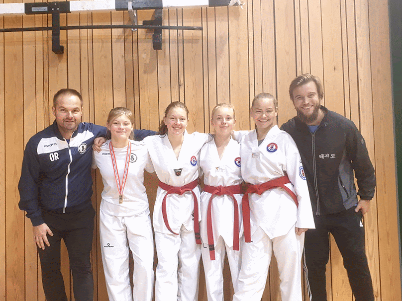
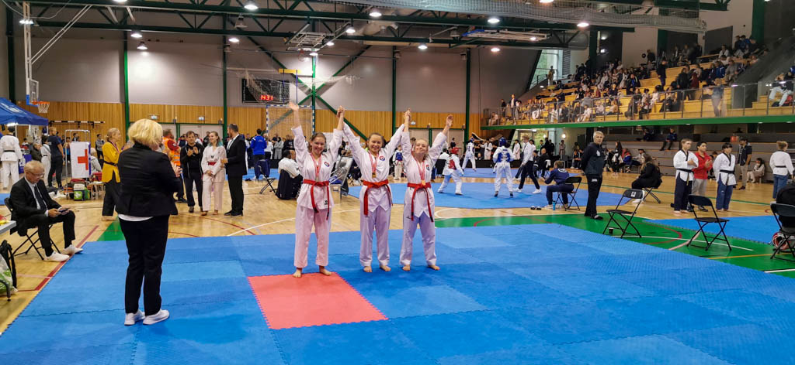

Innlegg
FULL KLAFF UNDER ÅRETS SISTE NORGESCUP

Team Ringerike stilte igjen opp på Østlandscup og Norgescup (NC3) på Grorud i helga. Denne gangen var det fire utøvere som konkurrerte i poomse, og alle tok med seg edelt metall hjem! Natalie Gaardahammer tok gull i klassen, som ungdom B cup høy. I klassen Junior B cup høy, gjorde vi rent bord med gull, sølv og bronse til henholdsvis Charlotte Vedhus Slettebakken, Helene Mala Haga og Ida Helen Bye. En imponerende prestasjon, bedre kunne det ikke gått!
Øistein og Anders var med som coach denne gangen, virkelig en takknemlig jobb, med så dyktige utøvere.
Moro for alle involverte
Natalie gjorde seg ferdig før lunsj, men for de andre utøverne ble det litt venting før de skulle i ilden. Da gjelder det bruke tiden på gjøre kroppen klar, koble av og følge med på de andre konkurrerende og kanskje få noen tips. Det var noen utfordringer med teknikken, og det elektroniske poengsystemet, men alt i alt en godt organisert konkurranse, fylt med idrettsglede.

Ida er klar for å komme seg på matta snartUtøvere i alle årets Norgescuper
Dette var siste Norgescup for i år, og vi har stilt utøvere i alle tre! Dette har ikke skjedd i manns minne og markerer virkelig en god start på konkurransesatsningen. Her er det bare å følge opp til neste år, med flere utøvere og forhåpentligvis gode resultater.

Gjengen fra Ringerike, her har Natalie mottatt medalje, resten har ennå ikke vist seg fram
Jentene fra Ringerike tapetserer pallen